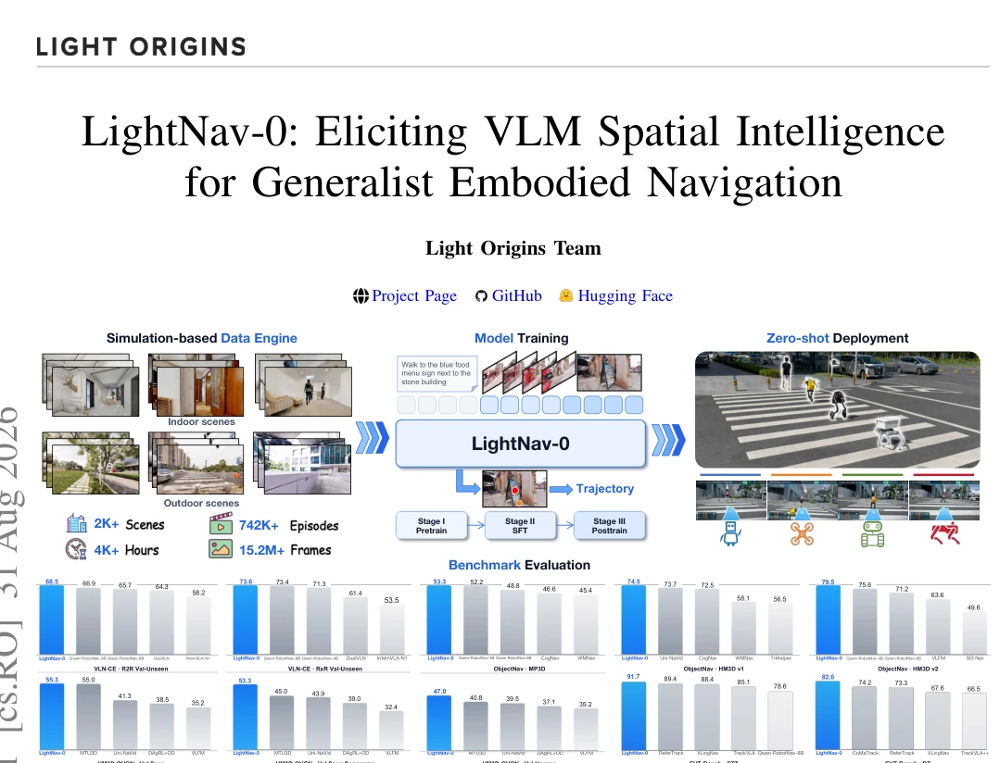
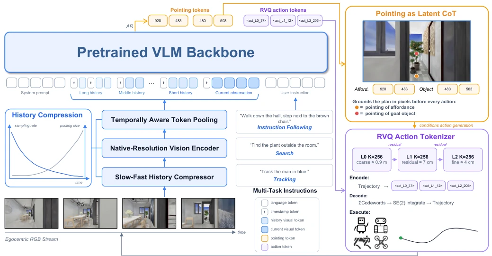
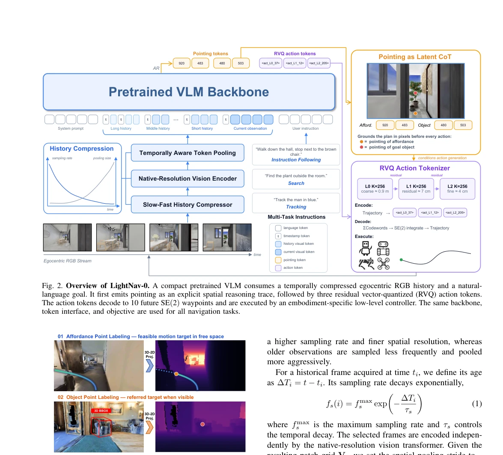
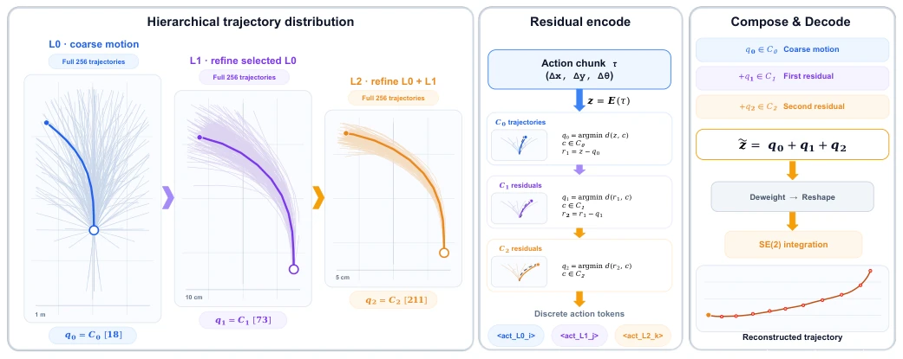
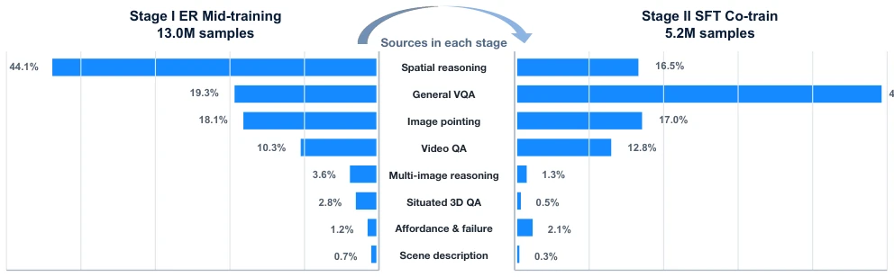
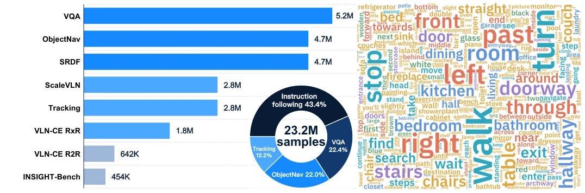
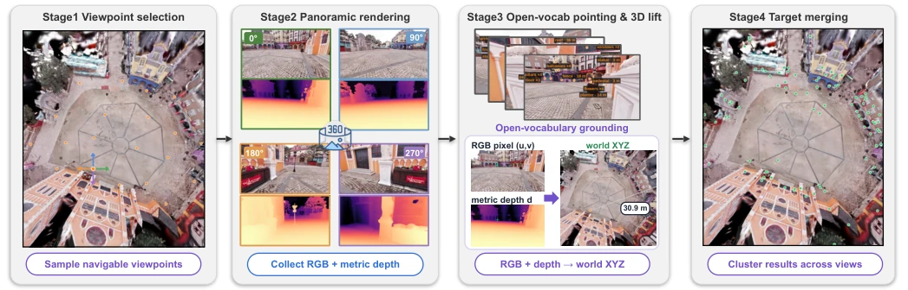
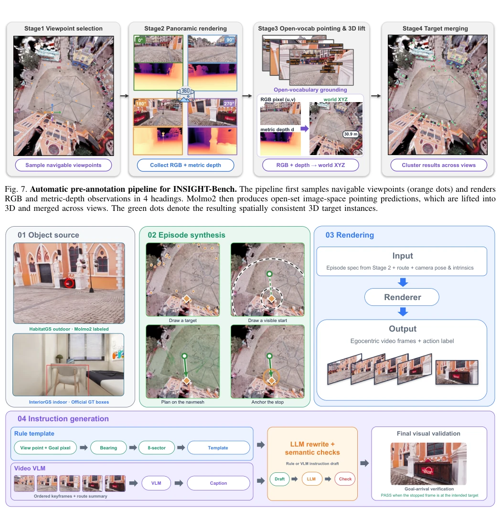
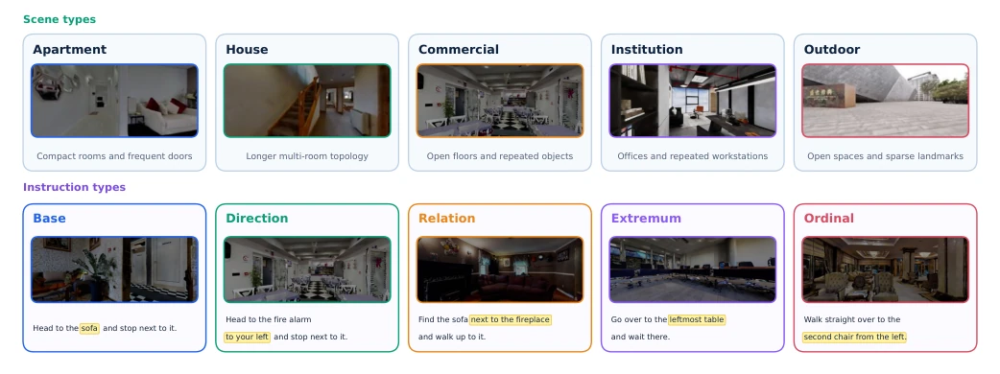
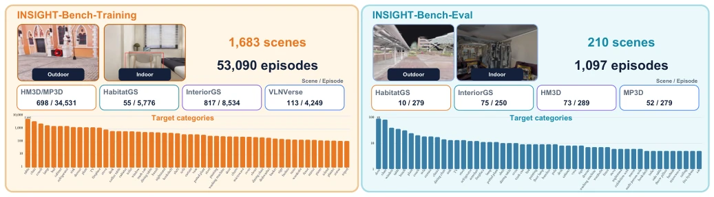

LightNav-0 attempts to solve the embodied navigation "hodgepodge" problem using a compact VLM; this approach is quite appealing: don't build those split perception, planning, and control modules; let one model do it all. It indeed turns the "point where you want, hit where you point" intuition into tokens, using "dual-channel point selection" (one for path, one for target) as intermediate reasoning, and combined with Residual Vector Quantization (RVQ) to compress actions into three tokens. This operation saves considerable compute while maintaining accuracy, counting as a prescription for the pain point of "large models being too cumbersome". However, forcing complex 3D spatial reasoning into 2D image grid tokens is like making an elephant dance ballet. Although the paper boasts zero-shot transfer to quadruped, humanoid, and even drones, will real-world lighting, dynamic obstacles, and sensor noise make this "elephant" fall flat on the spot? Additionally, whether the pre-trained VLM's "spatial intelligence" is truly fully stimulated, or just overfitting after fine-tuning, still depends on its performance in more chaotic real-world scenarios. Overall, this is an attempt of "using magic to defeat magic". Although it might have a suspicion of "over-simplification", the direction is worth praising.
The core pain point of embodied navigation lies in existing systems being too fragmented. Most existing methods design specialized components for specific tasks (such as instruction following VLN [4], object navigation [6], or visual tracking [66]), such as waypoint predictors, topological maps, or specific action heads [2, 38, 66, 69]. This "silo-style" architecture leads to perception, reasoning, and control being severed. Once tasks, environments, or robot embodiments change, the model fails, unable to achieve true generalization. Although modern Vision-Language Models (VLM) have already possessed the potential for spatial reasoning and visual localization [5, 29, 63], existing navigation systems rarely utilize these capabilities directly, instead treating them as inputs to external modules, or relying on discrete action primitives, leading to limited accuracy and generalization. LightNav-0 aims to break this limitation, proposing a compact general-purpose model that directly utilizes the spatial intelligence of pre-trained VLMs, processing heterogeneous tasks through a unified token interface, without designing additional prediction heads for specific tasks or robot embodiments, thereby achieving zero-shot transfer across tasks and embodiments.

Fig. 1. LightNav-0: a compact generalist embodied navigation model. A single autoregressive model expresses spatial intent through affordance and object points and predicts RVQ-tokenized trajectories without task- or embodiment-specific prediction heads. The single model achieves state-of-the-art monocular success rates across 10 public simulation settings spanning instruction following, object goal navigation, and embodied visual tracking, and transfers zero-shot to humanoid, quadruped, aerial, and wheeled robots. Blue bars denote LightNav-0, whereas gray bars denote prior methods.
The overall framework of LightNav-0 is based on Qwen3-VL-4B-Instruct [5] as the backbone, adopting a pure autoregressive generation mode, transforming navigation tasks into conditional token generation. Its core innovation lies in constructing a unified "spatial intent-action" interface. First, the model receives natural language instructions and compressed egocentric RGB historical videos. At the output end, it adopts "dual-channel point selection" as an explicit spatial reasoning chain (Chain-of-Thought): one channel generates "Affordance Points", indicating feasible local motion directions or free space waypoints; the other channel generates "Object Points", locating task targets (objects or locations). These two points are encoded as specific image grid tokens, directly utilizing the VLM's visual grounding capability. Subsequently, the model generates three action tokens through a Residual Vector Quantization (RVQ) action tokenizer, corresponding to coarse-grained, medium-grained, and fine-grained residuals of the trajectory, after decoding 10 SE(2) waypoints are obtained, achieving high-precision continuous control. In terms of data flow, the model introduces a "temporal-aware visual history compression" mechanism, balancing recent details and long-term context under a fixed token budget based on time-decay sampling rates and spatial pooling strides. The training process is divided into three stages: first, using embodied reasoning (ER) data from 36 sources for intermediate training to strengthen spatial understanding; next, combining navigation data and auxiliary VQA data for supervised fine-tuning (SFT), adopting the DAgger strategy; finally, performing online reinforcement learning (RL) alignment. The entire process requires no task identifiers or auxiliary prediction heads, all tasks share the same token space and prediction heads.

Fig. 2. Overview of LightNav-0. A compact pretrained VLM consumes a temporally compressed egocentric RGB history and a natural- language goal. It first emits pointing as an explicit spatial reasoning trace, followed by three residual vector-quantized (RVQ) action tokens. The action tokens decode to 10 future SE(2) waypoints and are executed by an embodiment-specific low-level controller. The same backbone, token interface, and objective are used for all navigation tasks.

Fig. 3. Automatic dual-channel pointing annotation. The af- fordance channel indicates a feasible local direction or free-space waypoint, whereas the object channel localizes the task goal, either a target object or a goal location.

Fig. 4. Hierarchical residual vector-quantized action tokenizer. A 10-step SE(2) trajectory is quantized by a coarse 256-entry codebook and two residual 256-entry codebooks. Each level visualizes all 256 candidates and highlights the selected codeword. Any non-empty token prefix decodes into an executable coarse trajectory, while successive residual levels progressively refine geometric precision.

Fig. 5. 2-stage embodied-reasoning data curriculum. Stage I covers spatial reasoning, general VQA, image pointing, video QA, multi- image reasoning, situated 3D QA, affordance and failure understanding, and scene description. Stage II retains these capabilities through a rebalanced ER mixture during supervised co-training.

Fig. 6. Composition of the supervised fine-tuning corpus. The task-balanced optimization mixture combines VQA with instruction following, object navigation, tracking, VLN-CE, ScaleVLN [72], SRDF [73], and INSIGHT-Bench data. The task proportions and instruction word cloud illustrate the diversity of the unified training corpus.
The paper conducts a comprehensive evaluation on 10 public simulation settings, covering instruction following (R2R, RxR), object navigation (MP3D, HM3D v1/v2, HM3D-OVON), and embodied visual tracking (EVT-Bench). LightNav-0 achieves SOTA on monocular success rate and navigation metrics, significantly outperforming baselines such as DualVLN, InternVLA-N1, Qwen-RobotNav. Especially performing outstandingly in open-vocabulary object navigation (HM3D-OVON) and cross-embodiment transfer (humanoid, quadruped, drone, wheeled), proving its zero-shot generalization capability. Additionally, the model also achieves the highest average score on 8 embodied reasoning benchmarks (such as Point-Bench, RefSpatial), indicating its spatial reasoning capability is not compromised. Ablation studies show that dual-channel point selection and RVQ tokenizer are crucial for performance improvement, and the model performs excellently in inference latency (approx. 4ms/token) and computational efficiency. In terms of data, the training set contains 2000+ scenes and 4000+ hours of data, and introduces INSIGHT-Bench to enhance generalization in complex scenarios.
其他图片Other Figures

Fig. 7. Automatic pre-annotation pipeline for INSIGHT-Bench. The pipeline first samples navigable viewpoints (orange dots) and renders RGB and metric-depth observations in 4 headings. Molmo2 then produces open-set image-space pointing predictions, which are lifted into 3D and merged across views. The green dots denote the resulting spatially consistent 3D target instances.

Fig. 8. Automatic data-generation and instruction-labeling pipeline for INSIGHT-Bench. All scene sources are converted to a common 3D target inventory; we then draw a target and a start pose from which it is visible in at least one offline inventory view, plan a route on the navigation mesh, anchor the stop, and render an egocentric clip with action labels. The evaluated policy remains monocular, and the target need not appear in its initial forward-facing observation. Instructions are drafted by either a rule-template route or a video-VLM route, rewritten by an LLM under semantic checks, and confirmed by a visual goal-arrival check on the final frames.

Fig. 9. Two-axis diagnostic taxonomy of INSIGHT-Bench. The scene axis groups environments by dominant function and layout, independent of their source dataset. The instruction axis identifies the spatial mechanism required to resolve the goal.

Fig. 10. Composition of INSIGHT-Bench. The training split contains 1,683 scenes and 53,090 episodes collected from HM3D/MP3D, Habitat-GS, InteriorGS, and VLNVerse, whereas the evaluation split contains 210 scenes and 1,097 episodes from Habitat-GS, InteriorGS, HM3D, and MP3D. The lower histograms show the Top-50 navigation-target frequencies on a logarithmic scale.